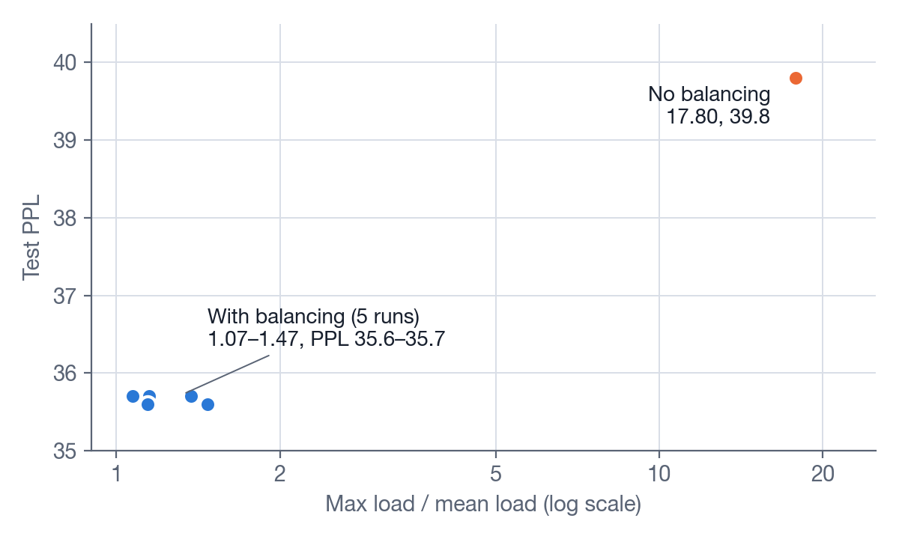
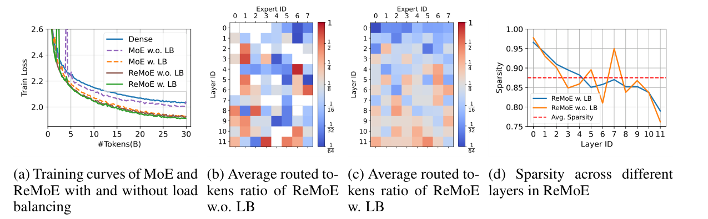
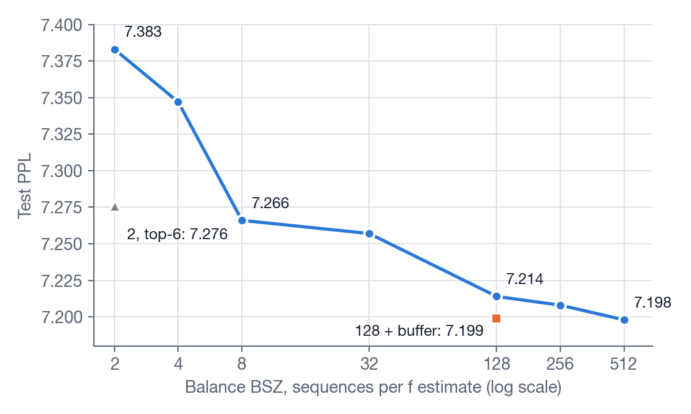
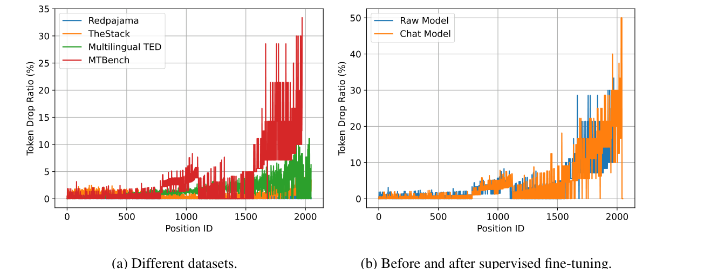
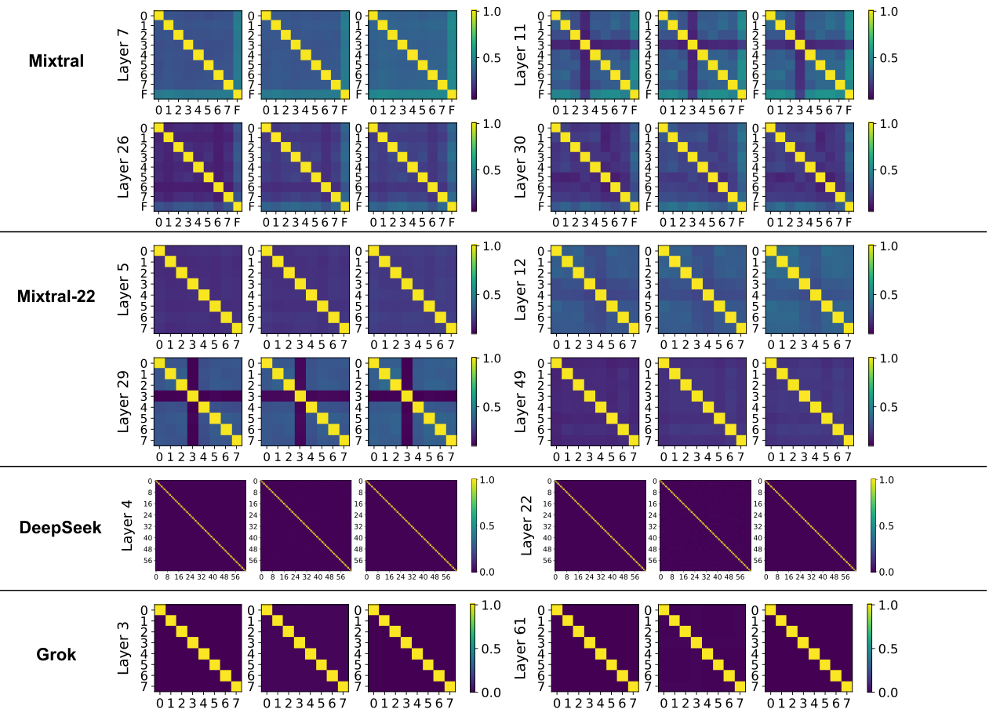
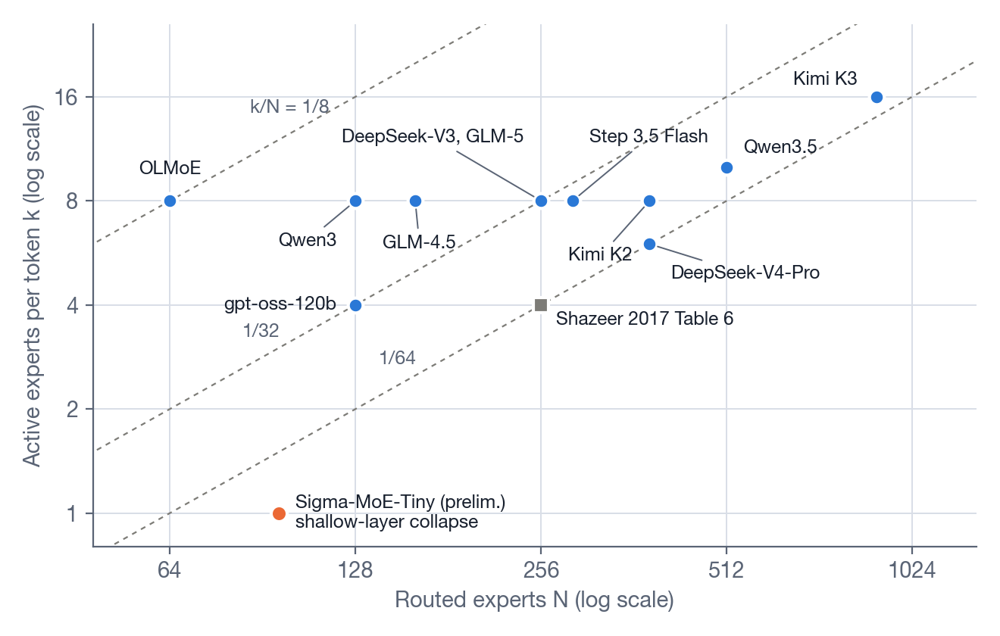

The Collapse of MoE
一个损失项就能防止路由崩塌，前沿模型为什么还在换方法？前沿报告给出的理由可以归为三个约束：均衡约束的范围越窄，专家分工越弱；专家并行要求每一步每张卡的负载接近；每个 token 激活的专家比例很小时，现有方法可能在浅层失效。
2017 年，Shazeer 等人在两层 LSTM 之间放了一个 256 个专家的 MoE 层，训练语言模型。不加均衡项时，最忙专家的负载是平均值的 17.80 倍，测试困惑度（PPL）是 39.8。加上辅助损失后，这个倍数降到 1.07 到 1.47，PPL 降到 35.6 到 35.7。损失系数从 0.01 变到 1.0，PPL 几乎不变。在这个设置下，防止路由崩塌的代价很小。
但 2024 到 2026 年，前沿模型一直在换方法。DeepSeek-V3 给每个专家加一个按负载调整的偏置。Qwen3 把辅助损失的统计范围扩大到全局 batch。Kimi K3 用分位数直接算出偏置。DeepSeek-V4 把前 3 层的学习路由换成按 token id 查表，但 DeepSeek-V4 的报告没有说明原因。一个损失项就能防止路由崩塌，前沿模型为什么还在换方法？
本文的结论是：前沿报告给出的理由可以归为三个约束。第一，均衡约束的范围越窄，专家分工越弱。这一条只有相关性证据。第二，专家并行要求每一步每张卡的负载接近。训练侧没有公开的代价数字。第三，每个 token 激活的专家比例很小时，现有方法可能在浅层失效。这一条只有一个直接证据。Sigma-MoE-Tiny 在 96 个专家选 1 个的初步实验中用偏置法，浅层出现了路由崩塌。负载最小的专家在 2K 步后一直收到 0 个 token。这个实验的 \(k = 1\)。前沿模型的 \(k\) 是 4 到 16。这个区间没有公开的失效数据。
1. 路由崩塌是什么
1.1 MoE 层
一个稠密 Transformer 层的 FFN 对每个 token 做同样的计算。MoE 层把这个 FFN 换成 \(N\) 个 FFN，每个 FFN 叫一个专家。每个 token 只经过其中 \(k\) 个专家。所以总参数随 \(N\) 增长，每个 token 的计算量只随 \(k\) 增长。本文把 \(k/N\) 叫激活比例。
路由器决定每个 token 去哪几个专家。它是一个线性层 \(W_{r}\)。设进入这一层的 token 向量是 \(x\)。路由器先算出 \(N\) 个 logit：
再把 logit 变成打分 \(s\)，选出打分最高的 \(k\) 个专家，记作集合 \(T\)。层的输出是这 \(k\) 个专家输出的加权和：
不同模型的打分和权重 \(w_{i}\) 有三种写法。第 2.2 节说明三种写法的梯度不同。
| 写法 | 打分 | 权重 \(w_{i}\) | 代表 |
|---|---|---|---|
| A | 对全部 \(N\) 个 logit 做 softmax | 直接用 softmax 值，不重新归一化 | Switch |
| B | 先选 top-k 的 logit | 只在选中的 \(k\) 个 logit 上做 softmax | Shazeer 2017，Mixtral，gpt-oss，nanoMoE |
| C | 每个 logit 做 sigmoid | 在选中的 \(k\) 个专家内归一化 | DeepSeek-V3，Kimi K3 |
很多前沿模型还有共享专家（shared expert）。共享专家处理所有 token，不经过路由器。本文讨论的路由崩塌只涉及路由专家。
大模型训练常把不同专家放在不同的卡上。这叫专家并行（expert parallelism，EP）。放同一组专家的若干张卡叫一个 EP 组。
1.2 负载和 MaxVio
负载指一个专家在一组 token 里收到的 token 数。负载不均衡指各专家的负载不相等。本文用 MaxVio 度量负载不均衡。MaxVio 来自 DeepSeek 提出偏置法的论文，下文称 Loss-Free 论文（Loss-Free 2024）：
例：8 个专家，1000 个 token，每个 token 选 1 个专家。平均负载是 125。最忙专家收到 500 个 token 时，MaxVio 等于 3。每个 token 都选中同一个专家时，MaxVio 取最大值 \(N/k - 1\)。
统计范围不同，MaxVio 的含义不同。MaxVio_batch 在一个训练 batch 上统计。训练时一个 batch 常被切成多个 micro-batch，分到不同的卡上。MaxVio_global 在整个验证集上统计。Loss-Free 论文报告所有层的平均值。
1.3 定义
路由崩塌（routing collapse）是负载不均衡的极端状态。本文用两个条件定义它：
- 程度极端。少数专家收到大部分 token，其他专家几乎收不到 token。本文的操作判据是：某一层的 MaxVio_batch 持续大于 1。这个阈值由本文选定，文献没有统一阈值。
- 自我放大。差距来自训练动力学，不来自数据。
第二个条件把路由崩塌和普通的不均衡分开。普通的不均衡来自数据。例如一个 batch 里代码多，处理代码的专家就忙。下一个 batch 可能相反。Shazeer 等人在原论文第 4 节描述了自我放大。路由器倾向于总给同几个专家大权重。这些专家训练得更快，所以不均衡会自我强化（Shazeer 2017）。DeepSeek-V3 报告 §2.1.2 引用了这个说法：“an unbalanced expert load will lead to routing collapse (Shazeer et al., 2017)”（DeepSeek-V3 2024）。
2. 路由崩塌为什么发生
路由崩塌有两个前提和一个反馈环。
2.1 前提一：top-k 是硬选择
top-k 是离散操作。一个专家要么被选中，要么不被选中。未选中的专家对这个 token 的输出没有贡献。系统不计算它的 \(E_{j}(x)\)。
2.2 前提二：路由器得不到未选中专家的信息
记 \(g_{m} = \frac{\partial L}{\partial y} \cdot E_{m}(x)\)。\(g_{m}\) 为负时，专家 \(m\) 的输出能降低损失。三种写法下，语言模型损失对 logit 的梯度如下。
写法 A。对 \(y = \sum_{i \in T} s_{i} E_{i}(x)\) 和 \(s = \mathrm{softmax}(z)\) 求导，得到：
对未选中的专家 \(j\)，梯度是 \(-s_{j}\) 乘一个所有未选中专家共用的标量。这个梯度只把 \(z_{j}\) 整体推高或压低。它不含 \(E_{j}(x)\) 的信息。
写法 B 和 C。权重只依赖选中专家的 logit，所以未选中专家的梯度严格为 0。选中专家的梯度只含选中专家之间的相对差。\(k = 1\) 时权重恒等于 1，路由器从语言模型损失得到的梯度全部为 0。Shazeer 2017 用写法 B。原文 §2.1 写道：\(k > 1\) 时，选中专家的权重对路由器参数才有非零导数。Switch 做 top-1，所以改用写法 A。
三种写法有一个共同点：路由器只能比较被选中专家的效果，不知道未选中专家的效果。Shazeer 2017 的 Noisy Top-K 在 logit 上加可训练的噪声，让未选中的专家有机会被选中。原文说噪声帮助负载均衡。没有这类机制时，路由器不探索。
2.3 反馈环
两个前提组成一个三步的环：
- 路由器把较多 token 送给专家 A。
- 专家 A 在这些 token 上得到较多梯度更新，它对这类 token 的输出变好。
- A 的输出变好，\(g_{A}\) 变负。由第 2.2 节的梯度，梯度下降推高 A 在这些 token 上的 logit。如果这些 token 的向量和其他 token 的向量有共同分量，A 的 logit 在其他 token 上也升高。路由器把更多 token 送给 A。
未选中的专家 B 得不到更新。它的输出不变好，所以更难被选中。环里没有一项让负载变得更均匀。所以初始化时的随机差距会被放大。
这个环是一个机制假说。它的依据是 Shazeer 2017 的定性描述。第 3.3 节的偏置法轨迹满足自我放大的条件，但它的触发因素是偏置法，不能证明这个环。最强的反方解释是输入的几何结构。第一个 MoE 层的输入接近 token 嵌入。嵌入有共同的均值方向，token 频率服从 Zipf 分布。某个专家的路由向量和均值方向的内积最大时，它在初始化后很快拿到大部分 token。这个解释不需要第 2 步。它也能解释第 3.3 节的层间差别：第 0 层负载很不均匀，第 52 层正常。第 9.2 节给出一个能区分两种解释的实验。
2.4 相同结构的其他失效
两种已知的失效有相同的前提：硬选择，只有被选中的单元得到梯度。
- VQ-VAE 的码本崩塌（codebook collapse）。编码器输出只更新距离最近的码字。Jukebox 把码本崩塌定义为：所有编码映射到一个或少数几个码字，其余码字不被使用。修复方法是：把使用率低于阈值的码字重置为当前 batch 的一个编码器输出（Jukebox 2020，§3.1）。Huh 等人用 ResNet18、ImageNet100 和 1024 个码字做实验。Kaiming 初始化时 active 指标是 6.8，用 LRU 替换后是 99.9（Huh 2023，Table 1）。
- ReLU 神经元死亡（dying ReLU）。预激活一直为负的神经元梯度为零，所以它不再被激活。Lu 等人证明，深度 ReLU 网络在深度趋于无穷时会死亡（Lu 2019，Theorem 3.1）。他们分析的是初始化时整个网络死亡，和训练中单个神经元逐步死亡不同。
MoE 里对应码本重置的方法是：重新初始化收不到 token 的专家。本文没有找到在 LLM 预训练中用这个方法并报告效果的工作。
2.5 修复方法打断哪一步
第 4 节按修复方法打断的环节，把方法分成五组：
- 补信号：让路由器得到未选中专家的信息。打断前提二。
- 加纠偏项：在损失里加一项，让负载高的专家打分下降。打断第 3 步。
- 改选择分数：不改梯度，直接改 top-k 用的分数。打断第 1 步。
- 改分配规则：让分配本身保证均衡。打断前提一。
- 去掉学习路由：在最容易路由崩塌的层不学习路由。整个环不存在。
3. 测量与证据
3.1 指标
| 指标 | 定义 | 能发现什么 | 来源 |
|---|---|---|---|
| MaxVio_batch | 一个 batch 内最大负载相对平均负载的超出比例 | 当前步的不均衡 | Loss-Free 论文 |
| MaxVio_global | 整个验证集上的 MaxVio | 长期的不均衡 | Loss-Free 论文 |
| 每层每专家的 token 比例 | 每个专家收到的 token 占比 | 哪一层、哪个专家路由崩塌 | OLMoE Figure 10 |
| 每卡 token 数的最大值除以平均值 | 按专家并行的分组统计 | 每步耗时和显存 | Step 3.5 Flash |
| 专家激活范数的最小值除以中位数 | 每个专家中间激活的 RMS | 死专家 | Step 3.5 Flash |
| 路由器权重的余弦相似度，\(R_{g}\) | 见第 5.3 节 | 均衡约束过强 | LongCat-Flash |
| 偏置的绝对值 | 偏置法中每个专家的偏置 | 偏置持续增大 | Sigma-MoE-Tiny |
MaxVio_batch 有一个由抽样决定的下限。近似地，每个专家的负载服从二项分布。相对标准差是：
\(M\) 是 batch 的 token 数，\(q\) 是目标负载。例：\(N = 896\)，\(k = 16\)，\(M = 32768\) 时，\(q \approx 585\)，相对标准差约 0.041。MaxVio_batch 取 896 个专家的最大值，约为 3 个标准差。均匀随机分配的模拟给出约 0.13。这些数字由本文计算。偏置法和分位数均衡用上一个 batch 定规则。所以它们在新 batch 上的 MaxVio_batch 不能低于这个下限。\(q\) 越小，这个下限越高。
3.2 小规模对照：不加均衡时负载集中，质量低于加均衡
Shazeer 2017 附录 Table 6。 MoE-256，\(k = 4\)，1 Billion Word，训练 10 个 epoch：
| \(w_{\mathrm{importance}}\) | \(w_{\mathrm{load}}\) | 测试 PPL | 最大负载 / 平均负载 |
|---|---|---|---|
| 0.0 | 0.0 | 39.8 | 17.80 |
| 0.2 | 0.0 | 35.6 | 1.47 |
| 0.0 | 0.2 | 35.7 | 1.15 |
| 0.1 | 0.1 | 35.6 | 1.14 |
| 0.01 | 0.01 | 35.7 | 1.37 |
| 1.0 | 1.0 | 35.7 | 1.07 |
\(w_{\mathrm{importance}}\) 惩罚各专家打分之和的差异。\(w_{\mathrm{load}}\) 惩罚各专家负载的差异。表中的负载是被选中概率之和。它是平滑估计，不是硬计数。17.80 表示约 27.8% 的 token 选中了最忙专家，算法是 17.80 × 4 / 256。最忙专家占全部分配的 6.95%。所有行都用了 Noisy Top-K 和零初始化的路由器权重。原文说这让初始负载近似均衡。

OLMoE 的消融（OLMoE 2024，§4.1.6，Figure 9 和 10）。不加辅助损失时，第一个 MoE 层一开始把几乎全部 token 分给原文所说的“6th expert”。几十亿 token 以后，部分 token 转到“1st expert”。图中只画了 8 个专家。原文没有给这个消融的模型配置。加辅助损失后，训练损失和验证损失都更低。
Hash Layers 附录 Table 9。 Switch 去掉辅助损失后，验证 PPL 是 24.80。稠密基线是 24.90。辅助损失系数为 0.1 时是 23.65（Hash Layers 2021）。不加辅助损失的 Switch 只比稠密基线低 0.10，比系数 0.1 时高 1.15。
ReMoE 附录 Table 11。 dMoE 不加辅助损失时下游平均分是 37.67，低于稠密模型的 38.20。加辅助损失时是 39.67（ReMoE 2024）。dMoE 指 dropless MoE，见第 4.7 节。
这些对照有四个限制。第一，每个配置只有一次运行，原文都没有给误差。第二，\(k/N\) 在 1/8 到 1/64 之间。Shazeer 2017 是 4/256，Hash Layers 的 Switch 是 1/64，ReMoE 的默认配置是 1/8，OLMoE 的消融没有给配置。这个区间覆盖了第 8 节表中前沿模型的 1/16 到 1/64。但 \(k\) 最大是 4，\(N\) 最大是 256。第三，规模小。Shazeer 的模型只有一个 MoE 层。第四，Hash Layers 和 ReMoE 只报告质量，没有报告负载。
3.3 低激活比例：加了均衡仍然路由崩塌
Sigma-MoE-Tiny 的最终模型有 20B 总参数和 0.5B 激活参数。每层最多 96 个专家，每个 token 选 1 个（Sigma-MoE-Tiny 2025）。它在初步实验中报告了两种均衡方法在浅层失效。原文给了 96 选 1 的设置，没有给这些实验的模型规模和训练步数：
- 全局 batch 辅助损失，§2.2.2。第 0 层负载最小的专家几乎收不到 token。负载最大的专家收到约 3 倍的目标负载。第 52 层正常。见原文 Figure 2。
- 偏置法，§3.5.2。负载最小的专家在 2K 步后一直收到 0 个 token。负载最大的专家收到约 40 倍的目标负载，约占全局 batch 一半的 token。浅层的偏置随训练持续增大，最后主导了打分。每一步偏置最大的专家拿走大部分 token。见原文 Figure 3。
第 2 条是一条轨迹：偏置持续增大，负载差距在训练中持续。它满足第 1.3 节的两个条件。它的触发因素是偏置法本身，所以它不能证明第 2.3 节的环。
本文查了 2025 到 2026 年的 9 份前沿报告：DeepSeek-V4、Kimi K2、Kimi K3、Qwen3、GLM-4.5、LongCat-Flash、Ling 2.0、Step 3.5 Flash、Sigma-MoE-Tiny。只有 Sigma-MoE-Tiny 给出了路由崩塌的数字。
3.4 死专家
本文的死专家只指专家侧的失效。Step 3.5 Flash 报告 §4.1.2 写道：路由分配稳定时，专家也可能失效。表现是专家激活趋于零，专家参数范数停滞或下降（Step 3.5 Flash 2026）。报告给出两个原因：
- 有共享专家时，路由专家的输出需要一个显式的缩放系数。没有这个系数时，即使路由频率正常，路由专家的贡献也可能被压低。
- 细粒度专家下，micro-batch 级的均衡约束过严。
报告说路由统计通常稳定，所以它不能灵敏地发现这种失效。报告建议监控每个专家的激活范数和参数范数，用最小值和中位数之比做预警。报告没有给数字。Kimi K3 §2.3.3 引用 Step 3.5 Flash，说不均衡的路由可能让一些专家训练不足。
4. 修复方法
下表按第 2.5 节的五组列出修复方法。各小节给机制、代表数字和代价。
| 方法 | 打断的环节 | 解决什么 | 主要代价 |
|---|---|---|---|
| Noisy Top-K | 前提二 | 路由崩塌 | 噪声增加方差 |
| Default MoE，ReMoE | 前提二 | 路由崩塌，部分 | 少量计算和存储；激活数可变 |
| 辅助损失 | 第 3 步 | 路由崩塌 | 干扰语言建模；低激活比例下有捷径解 |
| 全局 batch 统计 | 第 3 步 | 路由崩塌，允许分工 | 一次额外通信 |
| 设备级、EP 组损失 | 第 3 步 | 卡级不均衡 | 更强的约束 |
| 偏置法 | 第 1 步 | 路由崩塌 | 更新率 \(u\)；\(k = 1\)、低激活比例下浅层偏置持续增大 |
| 分位数均衡 | 第 1 步 | 路由崩塌，大专家池 | 一次直方图 all-reduce |
| 专家容量 | 无 | 只限制路由崩塌的计算后果 | 丢 token |
| BASE，Expert Choice | 前提一 | 路由崩塌 | 泄露未来信息，测试时规则不同 |
| Hash，前几层稠密，渐进稀疏化 | 整个环 | 浅层路由崩塌 | 浅层不学习路由，或激活参数更多 |
4.1 补信号
- Noisy Top-K（Shazeer 2017）。在 logit 上加可训练的噪声，再取 top-k。未选中的专家有机会被选中。
- Default MoE。每个专家保留一个默认输出向量。默认向量是该专家过去真实输出的指数滑动平均。前向时，未选中的专家用默认向量乘权重补上。路由器得到所有专家的梯度。专家计算仍然稀疏。1.96B 总参数、FineWeb-Edu 160B token 的设置下，达到 PPL 12.18 时少用约 9% 的 token。吞吐下降 1.85%（Panda 2025）。
- ReMoE。把 top-k 换成 ReLU 打分 \(w = \mathrm{ReLU}(W_{r} x)\)，这样整个路由可导。自适应 L1 正则把未激活专家的比例控制在 \(1 - k/N\)。L1 项按专家负载加权，所以它也起均衡作用。469M 激活参数、120B token、\(N = 8\)、\(k = 1\) 时，ReMoE 的验证损失是 1.689，dMoE 是 1.716（附录 C Table 5）。论文 §5.2 写道，不加均衡时，ReMoE 也有一些专家保持不活跃。

代价：Default MoE 每个专家多存一个向量。ReMoE 每个 token 的激活专家数可变，计算量只在平均值上受控。
4.2 加纠偏项：辅助损失
Switch Transformer 的形式是现在的标准写法（Switch 2021）：
\(f_{i}\) 是路由到专家 \(i\) 的 token 比例。它不可导，按常数处理。\(P_{i}\) 是专家 \(i\) 在这组 token 上的平均打分。它可导。记 \(p_{m}\) 为一个 token 对专家 \(m\) 的 softmax 打分。这个 token 的 logit 梯度正比于 \(p_{m} \left( f_{m} - \sum_{i} f_{i} p_{i} \right)\)。负载高于加权平均的专家，打分被压低。
例：2 个专家。\(f = P = (0.9, 0.1)\) 时，\(N \sum f_{i} P_{i} = 2 \times 0.82 = 1.64\)。\(f = P = (0.5, 0.5)\) 时是 1.0。
系数：Switch 把 \(\alpha\) 从 \(10^{-1}\) 扫到 \(10^{-5}\)，选 0.01。OLMoE 用 0.01。DeepSeekMoE 在 2B 模型用 0.01，在 16B 模型用 0.001。作者说更大的系数降低性能（DeepSeekMoE 2024）。Loss-Free 论文 Figure 2 画了这个折中：\(\alpha\) 小时路由崩塌，\(\alpha\) 大时 PPL 变差。
捷径解。\(P\) 均匀时，\(N \sum f_{i} P_{i} = \sum f_{i} = 1\)。这个值和 \(f\) 无关，等于完全均衡时的值。这时梯度很小。设这组 token 有 \(M\) 个，\(P_{i}\) 是它们打分的平均值。对 token \(t\) 的 logit 求导，得到：
打分均匀时，每个打分是 \(1/N\)。系数里的 \(N\) 和打分的 \(1/N\) 抵消：
梯度只取决于负载偏差。设最忙专家的负载是目标负载的 \(c\) 倍，它的负载偏差是 \((c - 1)/N\)。所以不均衡的倍数相同时，专家越多，梯度越小。例：\(c = 3\) 时，8 个专家的梯度是 96 个专家的 12 倍。语言模型梯度可能抵消这么小的梯度。所以损失值已经等于均衡时的值，token 分布仍然偏斜。Sigma-MoE-Tiny §2.2.2 在激活比例 1/96 的第 0 层观察到这个现象：\(P\) 趋于均匀，\(f\) 仍然很不均匀。原文说这时损失接近它的理想值。第 52 层相反，\(f\) 均匀，\(P\) 不均匀。1 不是数学上的最小值：\(f\) 按常数处理时，损失的最小值是 \(N \min_{i} f_{i}\)。
代价：辅助损失的梯度和语言模型损失的梯度方向不同。系数大时，辅助损失干扰语言建模。
4.3 辅助损失的统计范围
\(f_{i}\) 在多少 token 上统计，决定均衡约束有多强。
第 1.2 节说过，训练把一个全局 batch 切成多个 micro-batch。每张卡一次只算自己的 micro-batch。Qwen 团队发现，Megatron-Core 等框架在 micro-batch 内算 \(f_{i}\)。一个 micro-batch 只有几条序列，所以均衡几乎在序列级执行。这时一条代码序列的 token 也要均匀分给所有专家。Qwen 团队在所有并行组之间同步 \(f_{i}\)，得到全局 batch 级的均衡（Qiu 2025）。
Table 1 节选。Balance BSZ 指算 \(f_{i}\) 时包含的序列数。每个配置一次运行：
| 模型与训练量 | 方法 | Balance BSZ | MMLU | GSM8k | 平均 PPL |
|---|---|---|---|---|---|
| 3.4B 总 / 0.6B 激活，120B token | 辅助损失 | 4 | 41.63 | 13.57 | 8.167 |
| 同上 | 辅助损失 | 512 | 43.48 | 15.31 | 8.038 |
| 同上 | 偏置法 | 4 | 41.30 | 12.43 | 8.521 |
| 同上 | 偏置法 | 512 | 42.74 | 14.18 | 8.080 |
| 15B / 2.54B，400B token | 辅助损失 | 16 | 59.99 | 48.07 | 5.778 |
| 同上 | 辅助损失 | 512 | 60.78 | 54.28 | 5.603 |
两点读法：
范围越宽，PPL 越低。Figure 2 在 3.4B、400B token 的设置下，Balance BSZ 从 2 增到 512，PPL 从 7.383 降到 7.198。超过 128 后，PPL 下降变慢。

MoE-3.4A0.6B 训练 400B token 后的测试 PPL。圆点是不同的 Balance BSZ。方块是 Balance BSZ 128 加缓冲区。三角是 Balance BSZ 2 时把激活专家从 top-4 增到 top-6。横轴是对数轴。数据来自 Qiu 2025 Figure 2 的标注值，本文重画。 偏置法也依赖统计范围。Balance BSZ 为 4 时，偏置法的 PPL 是 8.521，比同范围的辅助损失差 0.354。
DeepSeek-V3 §4.5.3 独立得出同一结论。1B MoE 的验证损失：序列级辅助损失 2.258，batch 级辅助损失 2.253，偏置法 2.253。3B MoE 上分别是 2.085、2.080、2.080。DeepSeek 的结论是优势来自统计范围更宽。
Qwen3 采用了全局 batch 辅助损失，报告 §2 原文是“to encourage expert specialization”（Qwen3 2025）。
代价：多一次跨并行组的通信。节点不够时，Qwen 用缓冲区在梯度累积步之间累计 \(f_{i}\)。
4.4 加纠偏项：卡级的损失
专家级的均衡不保证每张卡的负载均衡。三份报告在专家级之外加了卡级的约束：
- DeepSeek-V2 有三个辅助损失：专家级、设备级、通信级。设备级就是卡级。三个损失的系数分别是 0.003、0.05、0.02。它还限制每个 token 的专家最多分布在 3 个设备上（DeepSeek-V2 2024，§2.2.2 到 §2.2.3）。
- DeepSeek-V3 限制每个 token 最多发往 4 个节点。DeepSeek-V4 去掉了这个限制，原文是“we remove the constraint on the number of routing target nodes”。DeepSeek-V4 还重新设计了并行策略（DeepSeek-V4 2026，§2.1）。
- Step 3.5 Flash 用偏置法做专家级均衡。报告说偏置法不保证 micro-batch 级每张卡的均衡，所以另加一个 EP 组损失。EP 组损失把专家按卡分组，按组聚合 \(f\) 和 \(P\)。它的形式同第 4.2 节，系数是 0.001。
4.5 改选择分数：偏置法
DeepSeek 提出给每个专家加一个偏置 \(b_{i}\)。偏置只加在 top-k 用的分数上，不进入权重，也不产生梯度：
第二行是每个 batch 后的更新。\(c_{i}\) 是专家 \(i\) 的 token 数，\(\bar{c}\) 是平均值。负载高的专家偏置下降，负载低的上升。
偏置用上一个 batch 的负载更新，所以不泄露未来 token 的信息。语言模型逐个预测 token。如果路由决定用到同一序列后面的 token，训练时模型就看到了答案。推理时这个信息不存在。
Loss-Free 论文 Table 2。辅助损失基线 \(\alpha = 0.001\)，MaxVio_global 是层平均值：
| 规模 | 方法 | 验证 PPL | MaxVio_global |
|---|---|---|---|
| 1B | 辅助损失 | 9.56 | 0.72 |
| 1B | 偏置法 | 9.50 | 0.04 |
| 3B | 辅助损失 | 7.97 | 0.52 |
| 3B | 偏置法 | 7.92 | 0.04 |
更新率 \(u\) 取 0.0001 时早期均衡差，取 0.01 时后期均衡变差，0.001 最好（Figure 4）。
DeepSeek-V3 在前 14.3T token 用 \(u = 0.001\)，最后 500B token 用 0。它另加一个系数 0.0001 的序列级辅助损失，只防止单条序列内的极端不均衡。GLM-4.5 的配方相同：前 15T token 用 0.001，之后用 0，序列级辅助损失 0.0001（GLM-4.5 2025）。DeepSeek-V4 用更新率 0.001 和序列级辅助损失系数 0.0001（§4.2.2）。
失效：Sigma-MoE-Tiny 在 \(k = 1\)、\(N = 96\) 时，浅层的偏置持续增大并主导打分（第 3.3 节）。
理论：Han 和 Zhong 把偏置法写成求解分配问题的原始-对偶方法。每步做一次常数时间的更新。他们在在线设定下给出对数 regret 界（Han and Zhong 2025）。
代价：多一个超参数 \(u\)。\(u\) 在适应速度和负载振荡之间折中。
4.6 改选择分数：分位数均衡
Kimi K3 有 896 个路由专家，每个 token 激活 16 个（Kimi K3 2026，Table 1）。报告 §2.3.3 说，固定的更新率 \(u\) 在适应太慢和负载振荡之间折中。专家池增到 896 后，均衡更难。报告没有给失效的数字。
K3 提出分位数均衡（Quantile Balancing，QB）。设一个 batch 有 \(M\) 个 token，目标负载 \(q = Mk/N\)。K3 用 sigmoid 打分。token \(t\) 对专家 \(i\) 的打分记作 \(s_{t,i}\)。步骤：
- 路由时取 top-(k+1)。前 \(k\) 个是实际路由。第 \(k+1\) 名的带偏置打分记作截断值 \(\tau_{t}\)。
- 对专家 \(i\)，算每个 token 的余量 \(s_{t,i} - \tau_{t}\)。
- 截断值固定时，取余量在所有 token 上的 \(1 - k/N\) 分位数，取负，作为专家 \(i\) 的新偏置。没有并列时，恰好有 \(q\) 个 token 的余量超过阈值。
- 所有专家的偏置减去它们的均值。共同的偏移不改变 top-k 选择。
手算例：4 个 token，2 个专家，\(k = 1\)，目标负载 \(q = 2\)。当前偏置为 0，打分如下：
| token | \(s_{t,1}\) | \(s_{t,2}\) | 当前选择 | 截断值 \(\tau_{t}\) |
|---|---|---|---|---|
| 1 | 0.9 | 0.2 | 专家 1 | 0.2 |
| 2 | 0.8 | 0.3 | 专家 1 | 0.3 |
| 3 | 0.7 | 0.6 | 专家 1 | 0.6 |
| 4 | 0.4 | 0.5 | 专家 2 | 0.4 |
专家 1 的余量是 0.7、0.5、0.1、0.0。用线性插值取 0.5 分位数，得 0.3，所以 \(\hat{b}_{1} = -0.3\)。专家 2 的余量是 0.0、0.0、0.0、0.1，0.5 分位数是 0.0，所以 \(\hat{b}_{2} = 0\)。专家 2 的余量有并列，没有阈值能让恰好 2 个余量超过它。中心化后 \(b = (-0.15, 0.15)\)。新分数下 token 1、2 选专家 1，token 3、4 选专家 2，负载是 (2, 2)。专家 1 的阈值取区间端点 0.1 时，token 3 的新分数是 0.65 对 0.65，出现并列。所以分位数的取法和并列的处理都影响结果。
这一步假设截断值不变。所有专家的偏置同时改变时，截断值也会变。所以 K3 附录 C 说 QB 要几步更新才达到均衡，不是一步。
附录 C 还给出 QB 和偏置法的关系。两者优化同一个对偶目标。固定更新率的 sign 更新是这个目标上的一步 SignSGD。QB 直接取坐标最优解。所以 QB 没有类似学习率的超参数。K3 说这个推导沿用了苏剑林的博客 “Travels in MoE: 6. Promoting Load Balance via Optimal Assignment”（spaces.ac.cn/archives/11619，2026-02）。本文没有读到这篇博客的原文。相关的前作有 BIP 均衡（Sun 2025）和 Expert Threshold Routing（Sun 2026）。后者给每个专家维护一个 EMA 阈值，训练和推理用同一规则。
工程实现：全局 batch 的余量有几百万个，分布在不同的卡和累积步上。K3 给每个专家维护一个直方图，一次 all-reduce 汇总各卡的计数，再从计数读出分位数。附录 D 用 1000 个 bin。原文说没有可测量的残余不均衡。Megatron-LM 已把它作为 moe_router_load_balancing_type 的取值 quantile_balancing（Megatron-LM MoE README，commit 92641a421f）。
代价：每步多一次直方图 all-reduce，路由多算一个 top-(k+1)，bin 数是一个超参数。报告没有给 QB 和偏置法在同一规模下的损失对比。
4.7 改分配规则
专家容量。每个专家有一个 token 数上限，超出的 token 跳过这一层。Switch 的专家容量等于平均每专家 token 数乘以容量因子。容量因子 1.25 表示最多收平均值的 1.25 倍。专家容量不防止路由崩塌，只给路由崩塌的计算后果设上界。代价是丢 token。OpenMoE 发现序列后部的 token 更容易被丢（OpenMoE 2024），见下图。前沿模型改用 dropless：不设专家容量，所有 token 都计算。MegaBlocks 用块稀疏矩阵乘法实现 dropless（MegaBlocks 2022）。DeepSeek-V3 §2.1.2 说，因为均衡策略有效，训练和推理都不丢 token。dropless 的前提是均衡足够好，否则单卡的 token 数没有上界。

OpenMoE 论文 Figure 12：OpenMoE 在每个位置被丢的 token 比例。(a) 是 RedPajama、TheStack、多语言 TED 和 MTBench 四个数据集。(b) 是 SFT 前后的模型。来源：Fuzhao Xue et al. OpenMoE: An Early Effort on Open Mixture-of-Experts Language Models. Figure 12. arXiv:2402.01739，CC BY 4.0。 BASE Layers。把分配写成线性分配问题，每个专家正好收 \(M/N\) 个 token，用拍卖算法求解。测试时贪心选 top-1，原因是均衡分配会泄露未来 token 的信息（BASE Layers 2021，§3.2.2）。
Expert Choice。每个专家选 top-k 个 token，负载按结构完全均衡（Expert Choice 2022）。代价是 top-k 选择用到同 batch 的未来 token。Loss-Free 论文 §5.2 把分块从 8192 token 缩到 512 token，损失异常下降约 10%。这个下降是信息泄露的证据。
4.8 去掉学习路由，或提高浅层激活比例
第 3 节的路由崩塌数字都来自第 0 层。OLMoE 只画了第一个 MoE 层。Sigma-MoE-Tiny 比较了第 0 层和第 52 层，是唯一的层间比较。Ling 2.0 §5.6 写道，浅层 MoE 的路由更不均衡，含这些层的流水线阶段更容易显存溢出（Ling 2.0 2025）。前沿模型用三种方法处理浅层：
- 前几层用稠密 FFN。DeepSeek-V3 和 GLM-4.5 用 3 层，Kimi K2、Kimi K3、GLM-4.5-Air 用 1 层。Ling 2.0 §5.4.2 说，这个策略缓解了浅层不均衡，所以提高了算子效率。
- 前几层用 hash 路由。Hash 路由在训练前按 token id 把每个 token 固定分给专家。它没有路由参数，也没有辅助损失。Hash Layers 论文 Table 1 中，单个稀疏层时，Hash 的验证 PPL 比 Switch 低 0.49（64 个专家）和 0.63（128 个专家）。5 个稀疏层、每层 16 个专家时，Switch 是 23.00，Hash 是 23.21，Switch 更好。DeepSeek-V4 把前 3 层换成 hash 路由的 MoE 层（§2.1，§4.2.1）。报告没有给原因。
- 渐进稀疏化。Sigma-MoE-Tiny 在训练前期让前 8 层分别激活 8、8、6、6、4、4、2、2 个专家，其他层激活 1 个。后期全部切到 1 个。从同一个中间 checkpoint 继续训练 200B token：保持前期设置时激活参数 0.65B、MMLU 63.69；全部切到 1 个专家后激活参数 0.50B、MMLU 63.53（Table 3）。
这些方法的代价和收益，公开文献没有在同一规模下比较过。
5. 其他相关失效
死专家见第 3.4 节。MoE 文献里还有几种和路由有关的失效，它们的机制和路由崩塌不同。下表把它们分成两组。退化型指某个量在训练结束时退化。不稳定型指训练中出现跳变或不一致。
| 组 | 名称 | 什么退化或不稳定 | 测量 | 修复 |
|---|---|---|---|---|
| 退化型 | 死专家 | 少数专家的激活和参数范数 | 激活范数最小值 / 中位数 | 路由专家缩放系数；更宽的均衡范围 |
| 退化型 | 表示崩塌 | token 向量的有效维度 | 类内与类间协方差之比 | 低维归一化打分 |
| 退化型 | 专家同质化 | 专家之间的差异 | 专家权重或输出的余弦相似度 | 细粒度专家和共享专家 |
| 退化型 | 路由器同质化 | 路由对输入的依赖 | 路由器权重的余弦相似度，\(R_{g}\) | 减小辅助损失系数 |
| 不稳定型 | logit 增大 | 路由器 logit 的大小 | logit 大小，发散次数 | z-loss |
| 不稳定型 | MoE 层激活离群值 | 专家内的激活值 | 激活最大值，loss spike | 激活限幅；Anticipatory Routing |
| 不稳定型 | 路由波动 | 同一 token 在不同训练步的专家选择 | 换专家的 token 比例 | 冻结路由器；Routing Replay |
| 不稳定型 | 训推路由不一致 | 同一 token 在两套实现中的专家选择 | 选了不同专家的路由器比例 | R3 |
5.1 表示崩塌
Chi 等人指出，路由器用点积打分会让 token 向量向专家向量聚集，把 token 向量压到最多 \(N\) 维的子空间（Chi 2022）。他们的 X-MoE 先把 token 和专家向量降到 16 维，再做 L2 归一化，再用可学温度打分。12 层编码器、32 专家的设置下，MLM 验证 PPL 从 19.02 降到 18.72。负载均衡的模型也可能出现表示崩塌。
5.2 专家同质化
专家同质化指不同专家学到相近的函数。Lo 等人测了专家之间的权重余弦相似度（Lo 2024）：
- Mixtral 的专家之间主要在 0.2 到 0.4。Mixtral 的专家和 Mistral 的 FFN 之间约 0.6。Lo 2024 据此推测，Mixtral 复制 Mistral 的 FFN 来初始化专家，这个过程叫 upcycling。Mixtral 论文没有写初始化方法。
- DeepSeek 和 Grok 的路由专家之间接近 0。
- Mixtral 专家输出的相似度在最后几层超过 0.8。

DeepSeekMoE 用细粒度专家和共享专家减少冗余。它屏蔽打分最高的一部分专家时，损失比 GShard×1.5 上升得快。作者据此认为专家冗余更少（Figure 4）。GShard×1.5 指专家宽度为 1.5 倍的 GShard 模型。
5.3 路由器同质化
路由器同质化和路由崩塌方向相反。LongCat-Flash 报告 §3.1.3 写道：辅助损失的梯度占主导时，所有专家的路由器参数趋于相同，路由不再依赖输入（LongCat-Flash 2025）。这时负载均衡，但条件计算失去作用。
LongCat-Flash 用两个指标监控它：路由器权重向量之间的平均余弦相似度；梯度范数比 \(R_{g}\)，即辅助损失与语言模型损失对平均打分 \(P\) 的梯度范数之比。报告建议选辅助损失系数，让 \(R_{g}\) 小于 0.1。
5.4 logit 增大与 MoE 层激活离群值
ST-MoE 发现路由器 logit 会增大，在低精度下引起舍入误差和发散（ST-MoE 2022）。它的 z-loss 惩罚过大的 logit：
稳定性实验用一个计算量和 T5-XL 相当的稀疏模型。Table 4：基线 6 次运行中 4 次稳定，质量 -1.755 ± 0.02；加 z-loss 后 3 次中 3 次稳定，质量 -1.741 ± 0.02。质量是负对数 PPL，越大越好。两者的差在误差范围内。OLMoE 用 z-loss 系数 0.001，Figure 11 显示 loss spike 更少。DeepSeek-V3、DeepSeek-V4、Kimi K3 的报告正文没有写 z-loss。
MoE 层激活离群值是另一个问题。DeepSeek-V4 §4.2.3 写道：loss spike 总和 MoE 层的离群值一起出现，路由机制本身加剧了离群值。它从两个方向处理，原文是“breaking the vicious cycle induced by routing, and directly suppressing anomalous values”：
- Anticipatory Routing。第 \(s\) 步用当前参数 \(\theta_{s}\) 算特征，用旧参数 \(\theta_{s - \Delta s}\) 算路由索引。额外墙钟时间约 20%。DeepSeek-V4 只在检测到 spike 时短暂回滚并开启它，所以整体开销可以忽略。
- SwiGLU 限幅。SwiGLU 是 FFN 的一种激活函数。线性分量限制在 -10 到 10，门控分量上限 10。
报告说，这两个方法为什么有效仍是开放问题。Kimi K3 用 SiTU-GLU 给专家输出设上界 100（§2.3.2）。LongCat-Flash 用 hidden z-loss 压制大幅激活。
5.5 路由波动与训推路由不一致
本小节需要 RL 背景。
路由波动指同一个 token 在训练中不断换专家。
- StableMoE 在 BASE Layer 上测了验证集 token 最后一次换专家的时间：训练 20% 以后，40.9% 的 token 还会换专家；50% 以后 29.1%；80% 以后 15.4%（StableMoE 2022，Figure 2）。它的修复方法是先学一个均衡的路由，蒸馏到一个轻量路由器，再冻结它。
- OLMoE §5 从反方向测了同一件事：训练 5000 步时，top-8 路由已有最多约 60% 与最终 checkpoint 一致；训练 40% 时约 80%。第 0 层最慢。
- GSPO 论文 §5.3 测到，48 层的 Qwen3-30B-A3B-Base 每次 RL 梯度更新后，同一个 rollout 样本约 10% 的激活专家改变。GRPO 需要 Routing Replay 才能让 MoE 的 RL 正常收敛。Routing Replay 缓存旧策略激活的专家，在算新策略的重要性比时重放它们（GSPO 2025）。
- Step 3.5 Flash 在 mid-training 和 SFT 阶段冻结路由器权重，并关闭 EP 组损失。
训推路由不一致指同一个 token 在推理引擎和训练框架中选了不同的专家。RL 用推理引擎生成 rollout，用训练框架算梯度。两套实现的数值差异会改变 top-k 选择。R3（Rollout Routing Replay）论文在 Qwen3-30B-A3B 上测到，约 10% 的路由器选了不同专家，94% 的 token 至少在一层选了不同专家。训推 KL 散度，MoE 是 1.535e-3，稠密的 Qwen3-8B 是 6.4e-4。R3 在推理时记录路由掩码，训练时重放它。这样 KL 降到 7.5e-4。SWE 任务上，GRPO 在约第 90 步崩溃。GRPO 加 R3 的 Pass@1 是 38.6，GRPO 的最好值是 31.8（R3 2025）。
两种现象都来自 top-k 的不连续性。打分的微小变化可以改变专家选择。专家选择改变后，输出跳变。
6. 约束一：均衡和专家分工
均衡约束越强，专家越难分工。证据如下。
- 统计范围。Qwen 论文 Figure 1b：micro-batch 均衡下，代码和数学数据上没有一个专家的选择频率超过 0.15。全局 batch 均衡下，数学数据上很多专家超过 0.2。DeepSeek-V3 Figure 9 显示，16B 模型上偏置法的专家分工比辅助损失更强。
- 路由器同质化。LongCat-Flash 观察到，辅助损失主导时路由不再依赖输入，见第 5.3 节。
- 作者自述。OLMoE §4.1.6 写道，辅助损失限制了模型的灵活性，可能阻碍专家分工。Step 3.5 Flash §4.1.2 说，细粒度专家下 micro-batch 均衡过严，会阻碍专家分工。
这些证据有两个限制。第一，专家分工用某领域上专家的选择频率测量。这个指标本身就是领域内的负载集中，全局 batch 均衡在构造上允许它。第二，每组对照同时改变了约束的范围和强度。所以证据只支持相关，不能证明因果。有一个专家分工指标不依赖负载：屏蔽专家后各领域损失的上升。DeepSeekMoE 用过这个指标。
两者的冲突取决于均衡的统计范围。专家分工要求某类 token 集中到某些专家。均衡在一条序列内执行时，一条数学序列的 token 也必须平均分给所有专家。这时领域级分工不可能。均衡在全局 batch 上执行时，数学 token 可以集中，只要整个 batch 里其他 token 填满其他专家。所以第 8 节表中有 5 个模型在大范围上做专家级均衡。DeepSeek-V3、DeepSeek-V4、GLM-4.5 用偏置法，序列级辅助损失只保留系数 0.0001。Qwen3 和 Sigma-MoE-Tiny 用全局 batch 辅助损失。卡级均衡不同：Step 3.5 Flash 在 micro-batch 级另加 EP 组损失，见第 7 节。
专家分工太强也会失效。Step 3.5 Flash §4.1.3 报告，细粒度专家可以专门处理高频 bigram，造成局部激活爆炸。
7. 约束二：每张卡每一步均衡
专家并行把不同专家放在不同的卡上。每个 MoE 层做两次 all-to-all 通信：dispatch 把 token 发到专家所在的卡，combine 把结果发回。每张卡要等其他卡都算完，才能进入下一步。
所以负载最多的卡决定每步耗时。BASE Layers 论文 §2 写道：“expert layer processing speed is limited by the slowest worker”。Ling 2.0 §5.6 写道，EP 组的时间受最慢的卡限制。EP 组越大，每张卡的专家越少，这个效应越强。
这个约束的统计范围和第 6 节不同：
- 专家级均衡服务训练质量。它可以在全局 batch 上统计。
- 卡级均衡服务每步耗时和显存。它在每一步、每个 micro-batch、每张卡上都必须成立。
全局 batch 均衡只满足第 1 条，所以有的模型另加卡级损失，见第 4.4 节。
卡级不均衡还影响显存。dropless 下，一张卡收到的 token 数没有上界。Megatron-LM 文档的显存表中，EP 下的峰值激活随均衡程度变化。Ling 2.0 因浅层不均衡调整了流水线切分，并接受了性能损失。
推理时的专家负载分布和训练不同。SGLang 在 DeepSeek-V3 部署中测到，默认专家分布下 prefill 吞吐是每节点每秒 50,302 token，模拟完美的专家复制时是 59,337，DeepSeek 自己的 profile 是 62,713（SGLang 2025）。本文据此算出，默认分布的吞吐比完美复制低约 15%。DeepSeek 的 EPLB 在推理时复制高负载的专家（EPLB, GitHub deepseek-ai/EPLB）。
本文没有找到训练时卡级不均衡造成多少每步耗时损失的公开数字。
8. 约束三：激活比例，以及前沿配方
下表来自各模型的技术报告和官方 config.json。激活比例写作 \(k/N\)。“—”表示本文在一手来源中没有查到。标“config”的格子只来自 config.json。这些字段可能是推理代码的开关，不能证明训练配方。
| 模型 | 路由专家 / 激活 | \(k/N\) | 共享专家 | 打分 | 负载均衡 | 前几层 |
|---|---|---|---|---|---|---|
| OLMoE-1B-7B（2024-09） | 64 / 8 | 1/8 | 0 | — | 辅助损失 0.01，z-loss 0.001 | 0 |
| DeepSeek-V3（2024-12） | 256 / 8 | 1/32 | 1 | sigmoid | 偏置法 0.001，序列级辅助损失 0.0001 | 3 层稠密 |
| Qwen3-235B-A22B（2025-05） | 128 / 8 | 1/16 | 0 | — | 全局 batch 辅助损失 | 0 |
| Kimi K2（2025-07） | 384 / 8 | 1/48 | 1 | sigmoid | 报告未写 | 1 层稠密 |
| GLM-4.5（2025-08） | 160 / 8 | 1/20 | 1 | sigmoid | 偏置法 0.001，序列级辅助损失 0.0001 | 3 层稠密 |
| gpt-oss-120b（2025-08） | 128 / 4 | 1/32 | 0 | 选中专家内 softmax | model card 未写 | 0 |
| Sigma-MoE-Tiny（2025-12） | 96 / 1 | 1/96 | — | — | 全局 batch 辅助损失，渐进稀疏化 | 前 8 层渐进稀疏化 |
| Step 3.5 Flash（2026-02） | 288 / 8 | 1/36 | 1 | — | 偏置法，EP 组损失 0.001 | — |
| GLM-5（2026-02） | 256 / 8 | 1/32 | 1 | sigmoid（config） | noaux_tc（config） |
3 层稠密（config） |
| Qwen3.5-397B-A17B（2026-02） | 512 / 10 | 1/51 | 1（config） | — | — | 0（config） |
| DeepSeek-V4-Pro（2026-04） | 384 / 6 | 1/64 | 1 | sqrt(softplus) | 偏置法 0.001，序列级辅助损失 0.0001 | 3 层 hash 路由 |
| Kimi K3（2026-07） | 896 / 16 | 1/56 | 2 | sigmoid | 分位数均衡 | 1 层稠密 |

从表中读出三点：
- 激活比例在下降，\(N\) 和 \(k\) 都在增加。\(k/N\) 从 OLMoE 的 1/8 降到 1/16 到 1/64，2026 年的 5 个模型在 1/32 到 1/64 之间。\(k\) 是 4 到 16，\(N\) 是 128 到 896。第 3.2 节的对照按 \(k/N\) 覆盖这个区间，但都是 \(k \le 4\)、单层或小模型。唯一的失效数字来自 \(k = 1\)、\(N = 96\) 的初步实验。Kimi K3 说 896 个专家时固定的更新率更难，但没有给失效数字。第 3 节的路由崩塌证据都来自 AdamW。Kimi K2、Kimi K3、Step 3.5 Flash 用 Muon。所以公开文献没有回答现有方法在前沿区间是否失效。另外，第 3.1 节的 MaxVio_batch 抽样下限随 \(q\) 变小而上升。
- 12 个模型中有 4 个的报告写明用偏置法加一个小损失：DeepSeek-V3、GLM-4.5、DeepSeek-V4-Pro 加序列级辅助损失，Step 3.5 Flash 加 EP 组损失。GLM-5 只有 config 写了
noaux_tc。Qwen3 和 Sigma-MoE-Tiny 用全局 batch 辅助损失。两种做法的同规模对比见第 4.3 节：差别很小，都是单次运行。 - 浅层的处理有分歧：0 层、1 层、3 层稠密，3 层 hash 路由，或渐进稀疏化。
9. 开放问题与单卡实验
9.1 开放问题
- 在什么设置下，现有均衡方法在浅层失效？唯一的数据点是 Sigma-MoE-Tiny 的 \(k = 1\)、\(N = 96\)。\(k \ge 4\)、\(N \ge 128\) 的多层 Transformer 没有公开的逐层负载数据。需要的对照是固定 \(k/N\)、改变 \(k\)。它能区分“\(k = 1\)“和”\(k/N\) 小“两种解释。
- 分位数均衡比偏置法好多少？Kimi K3 报告没有给同规模对比，也没有给偏置法在 896 个专家下失效的数字。对偶更新有三种：固定更新率、衰减更新率、一步取坐标最优。在低激活比例的浅层，哪一种先失效，没有数据。
- 第 2.3 节的反馈环和输入几何，哪个是浅层路由崩塌的主因？没有对照实验。
- DeepSeek-V4 为什么用 hash 层代替稠密层？为什么把 sigmoid 换成 sqrt(softplus)？报告都没有给原因。
- 路由和 loss spike 的因果关系是什么？DeepSeek-V4 承认，Anticipatory Routing 为什么有效仍是开放问题。
- 训练时卡级不均衡损失多少每步耗时？公开文献没有数字。
- Muon 类优化器下，均衡和死专家的行为是否不同？Kimi K2、Kimi K3、Step 3.5 Flash 都用 Muon。第 3 节的路由崩塌证据都来自 AdamW。
9.2 1 张 A100 的复现实验
目标：在小模型上复现路由崩塌，区分第 2.3 节的两种解释，比较无均衡和三种均衡方法。
设置：
- 底座用 nanoMoE（GitHub wolfecameron/nanoMoE），MIT 许可。它的默认值会影响结果：每 2 层放一个 MoE 层，即
stride=2；用写法 B；默认开启容量，容量因子 1.25；词表 50304。本实验设stride=1，关闭容量。 - 模型：4 层 decoder，\(d_{\mathrm{model}} = 256\)，8 个专家，top-2，专家 FFN 维度 1024。数据 TinyStories。这个设置的 \(k/N\) 是 1/4，\(k = 2\)。它只检验第 2.3 节的两种解释，不检验约束三，也不能外推到第 3.3 节的 \(k = 1\)、1/96 区间。
- 四组：无均衡；辅助损失 \(\alpha = 0.01\)；偏置法 \(u = 0.001\)；分位数均衡。偏置法和分位数均衡按第 4.5 和 4.6 节的公式写。
- 两组机制对照，都不加均衡：第一组冻结专家，只训练路由器和其余参数；第二组先把路由器输入减去 batch 均值。
- 每组 3 个种子。每 50 步记录每层每专家的 token 比例、MaxVio_batch、偏置的绝对值、专家激活 RMS、验证损失。
算力：每 token 的 FLOPs 约为：
\(N_{\mathrm{active}}\) 是不含嵌入的激活参数，4 个 MoE 层时约 5.25M。\(V d\) 是输出层，50304 × 256 ≈ 12.9M。输出层和嵌入共享权重，也不减少这项计算量。\(n_{\mathrm{layer}}\) 是层数，\(n_{\mathrm{ctx}}\) 是上下文长度，\(d\) 是宽度。\(n_{\mathrm{ctx}} = 256\) 时，第二项约 3.1M。合计约 1.1e8 FLOPs/token。6 组 × 3 种子 × 1000 万 token，共 1.8e8 token，约 2e16 FLOPs。1 小时内完成需要每秒约 5 万 token。先跑 200 步测吞吐，再按测得的吞吐定 token 数。吞吐不够时，先减少机制对照的种子数。
预注册：
- 复现判据。无均衡组某个 MoE 层的末期 MaxVio_batch 大于 1.0，3 个种子都满足，算“复现路由崩塌”。\(N = 8\)、\(k = 2\) 时，MaxVio_batch 的上限是 3。不满足时，后面的比较作废，改用 \(N = 32\)、\(k = 1\)。\(k = 1\) 时必须改用写法 A，否则路由器没有语言模型梯度。
- 浅层预测。无均衡组第 0 层的末期 MaxVio_batch 比第 3 层大至少 0.5，3 个种子都满足，算成立。反过来成立，算推翻。其他情况记为“未决”，包括种子之间不一致。
- 损失预测。无均衡组 3 个种子的平均验证损失比每种均衡组的平均值都高至少 0.05，算成立。有一组均衡组高于无均衡组，算推翻。其他情况记为“未决”。
- 机制预测。冻结专家后，如果无均衡组第 0 层的末期 MaxVio_batch 仍大于 1.0，就推翻“专家学习是路由崩塌的必要条件”，并支持输入几何的解释。如果去均值后路由崩塌消失，说明共同分量是必要条件。两种解释都需要这个条件。所以去均值对照只检验它们共同的前提，不能区分它们。
- 均衡方法比较。两两验证损失之差的 90% 置信区间完全落在 ±0.02 内，记为“无差别”。完全落在 ±0.02 外，记为“有差别”。其他情况记为“未决”。
扩展：把 \(\alpha\) 从 0 扫到 0.1，画 PPL 对 MaxVio 的曲线。把第 0 层换成 hash 路由，看损失变化多少。
参考文献
经典工作：
- Shazeer et al. Outrageously Large Neural Networks: The Sparsely-Gated Mixture-of-Experts Layer. https://arxiv.org/abs/1701.06538 ，2017-01-23。
- Fedus et al. Switch Transformers. https://arxiv.org/abs/2101.03961 ，2021-01-11。
- Lewis et al. BASE Layers: Simplifying Training of Large, Sparse Models. https://arxiv.org/abs/2103.16716 ，2021-03-30。
- Roller et al. Hash Layers For Large Sparse Models. https://arxiv.org/abs/2106.04426 ，2021-06-08。
- Zoph et al. ST-MoE: Designing Stable and Transferable Sparse Expert Models. https://arxiv.org/abs/2202.08906 ，2022-02-17。
- Zhou et al. Mixture-of-Experts with Expert Choice Routing. https://arxiv.org/abs/2202.09368 ，2022-02-18。
- Dai et al. StableMoE: Stable Routing Strategy for Mixture of Experts. https://arxiv.org/abs/2204.08396 ，2022-04-18。
- Chi et al. On the Representation Collapse of Sparse Mixture of Experts. https://arxiv.org/abs/2204.09179 ，2022-04-20。
- Gale et al. MegaBlocks. https://arxiv.org/abs/2211.15841 ，2022-11-29。
- Dai et al. DeepSeekMoE. https://arxiv.org/abs/2401.06066 ，2024-01-11。
- Xue et al. OpenMoE. https://arxiv.org/abs/2402.01739 ，2024-01-29。
- DeepSeek-AI. DeepSeek-V2. https://arxiv.org/abs/2405.04434 ，2024-05-07。
- Lo et al. A Closer Look into Mixture-of-Experts in Large Language Models. https://arxiv.org/abs/2406.18219 ，2024-06-26。
- Wang et al. Auxiliary-Loss-Free Load Balancing Strategy for Mixture-of-Experts. https://arxiv.org/abs/2408.15664 ，2024-08-28。
- Muennighoff et al. OLMoE: Open Mixture-of-Experts Language Models. https://arxiv.org/abs/2409.02060 ，2024-09-03。
- Wang et al. ReMoE: Fully Differentiable Mixture-of-Experts with ReLU Routing. https://arxiv.org/abs/2412.14711 ，2024-12-19。
- DeepSeek-AI. DeepSeek-V3 Technical Report. https://arxiv.org/abs/2412.19437 ，2024-12-27。
2025 到 2026 年：
- Qiu et al. Demons in the Detail: On Implementing Load Balancing Loss for Training Specialized Mixture-of-Expert Models. https://arxiv.org/abs/2501.11873 ，2025-01-21。
- Sun. Binary-Integer-Programming Based Algorithm for Expert Load Balancing in Mixture-of-Experts Models. https://arxiv.org/abs/2502.15451 ，2025-02-21。
- Panda et al. Dense Backpropagation Improves Training for Sparse Mixture-of-Experts. https://arxiv.org/abs/2504.12463 ，2025-04-16。
- SGLang Team. Deploying DeepSeek with PD Disaggregation and Large-Scale Expert Parallelism. https://lmsys.org/blog/2025-05-05-large-scale-ep/ ，2025-05-05。
- Qwen Team. Qwen3 Technical Report. https://arxiv.org/abs/2505.09388 ，2025-05-14。
- Zheng et al. Group Sequence Policy Optimization. https://arxiv.org/abs/2507.18071 ，2025-07-24。
- Kimi Team. Kimi K2: Open Agentic Intelligence. https://arxiv.org/abs/2507.20534 ，2025-07-28。
- OpenAI. gpt-oss-120b & gpt-oss-20b Model Card. https://arxiv.org/abs/2508.10925 ，2025-08-08。
- GLM Team. GLM-4.5. https://arxiv.org/abs/2508.06471 ，2025-08-08。
- Meituan LongCat Team. LongCat-Flash Technical Report. https://arxiv.org/abs/2509.01322 ，2025-09-01。
- Ma et al. Stabilizing MoE Reinforcement Learning by Aligning Training and Inference Routers. https://arxiv.org/abs/2510.11370 ，2025-10-13。
- Ling Team. Every Activation Boosted: Scaling General Reasoner to 1 Trillion Open Language Foundation (Ling 2.0). https://arxiv.org/abs/2510.22115 ，2025-10-25。
- Han and Zhong. A Theoretical Framework for Auxiliary-Loss-Free Load Balancing of Sparse Mixture-of-Experts in Large-Scale AI Models. https://arxiv.org/abs/2512.03915 ，2025-12-03。
- Sigma Team, Microsoft Research. Sigma-MoE-Tiny Technical Report. https://arxiv.org/abs/2512.16248 ，2025-12-18。
- StepFun Team. Step 3.5 Flash: Open Frontier-Level Intelligence with 11B Active Parameters. https://arxiv.org/abs/2602.10604 ，2026-02-11。
- GLM Team. GLM-5: from Vibe Coding to Agentic Engineering. https://arxiv.org/abs/2602.15763 ，2026-02-17。
- Sun et al. Expert Threshold Routing for Autoregressive Language Modeling with Dynamic Computation Allocation and Load Balancing. https://arxiv.org/abs/2603.11535 ，2026-03-12。
- DeepSeek-AI. DeepSeek-V4: Towards Highly Efficient Million-Token Context Intelligence. https://arxiv.org/abs/2606.19348 ，2026-04-26。
- Moonshot AI. Kimi K3: Open Frontier Intelligence. https://github.com/MoonshotAI/Kimi-K3/blob/3cb39dfd32/k3_tech_report.pdf ，首次提交 2026-07-27，本文引用 2026-08-06 的版本。
相关领域：
- Lu et al. Dying ReLU and Initialization: Theory and Numerical Examples. https://arxiv.org/abs/1903.06733 ，2019-03-15。
- Dhariwal et al. Jukebox: A Generative Model for Music. https://arxiv.org/abs/2005.00341 ，2020-04-30。
- Huh et al. Straightening Out the Straight-Through Estimator. https://arxiv.org/abs/2305.08842 ，2023-05-15。